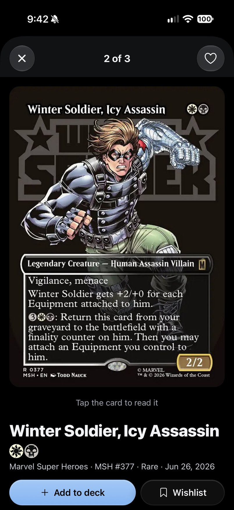
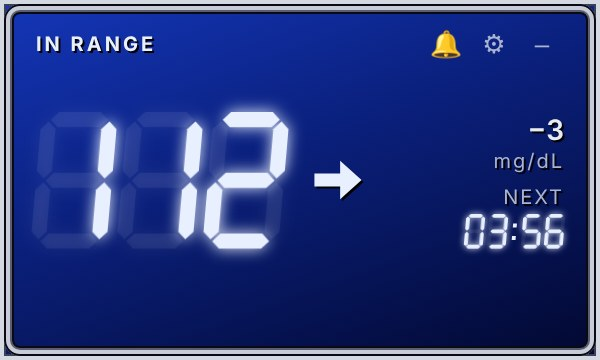
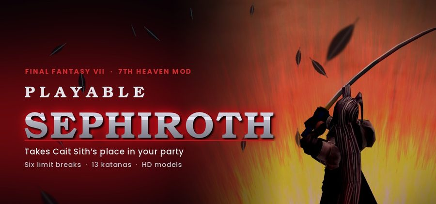
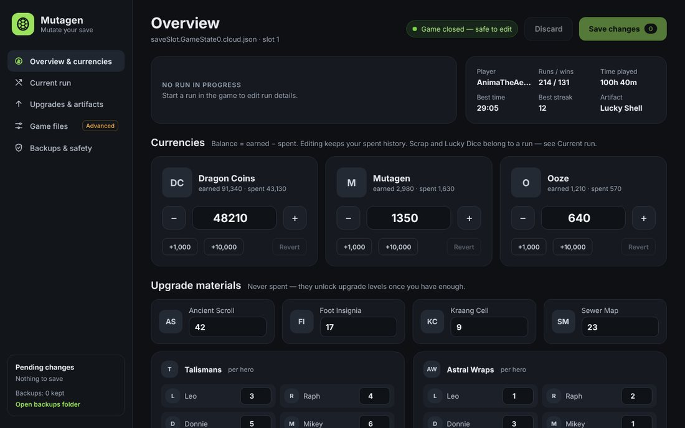
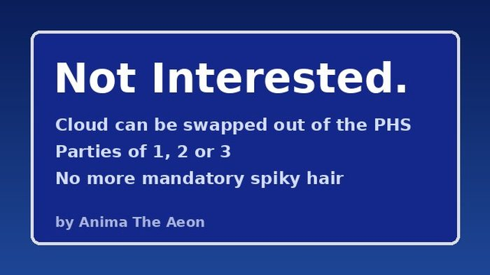

Personal projects
Code. Play. Repeat.
Card search, media tools, server utilities and a few things just for fun. Designed, tested and used every day.



The Lifestream suite
Six apps. One look.
Downloads, shows, movies, indexers and subtitles, all working together.

Glucose Widget
Dexcom readings, always on top.
Learn more ›

Hammersmith
Your Hammerwatch II saves, opened up.
Learn more ›

Karai & Shredder
Two new heroes for Splintered Fate.
Learn more ›

Playable Sephiroth
He joins your party. Finally.
Learn more ›

Mutagen
A save editor for Splintered Fate.
Learn more ›

Not Interested.
Cloud, optional.
Learn more ›

7 Days to Die Server Editor
A dedicated server in a few clicks.
Learn more ›
Nathan's 7 Days to Die Server editor–▢✕
Server settings
Server nameDead Harbor
Day length60 min
Blood moon
Start serverARK: ASA Server Manager
Tune your server, ARK style.
Learn more ›
Ark: ASA Server manager–▢✕
Rates
Taming speed3×
XP multiplier2×
Start serverNAS VPN
A VPN on your Synology, no command line needed.
Learn more ›
NAS VPN–▢✕
Connected
Location: Chicago · 38 ms
LocationChicago ▾
Kill switch
Disconnect